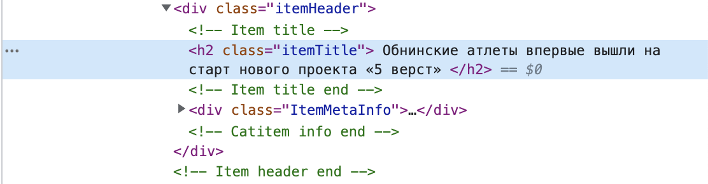
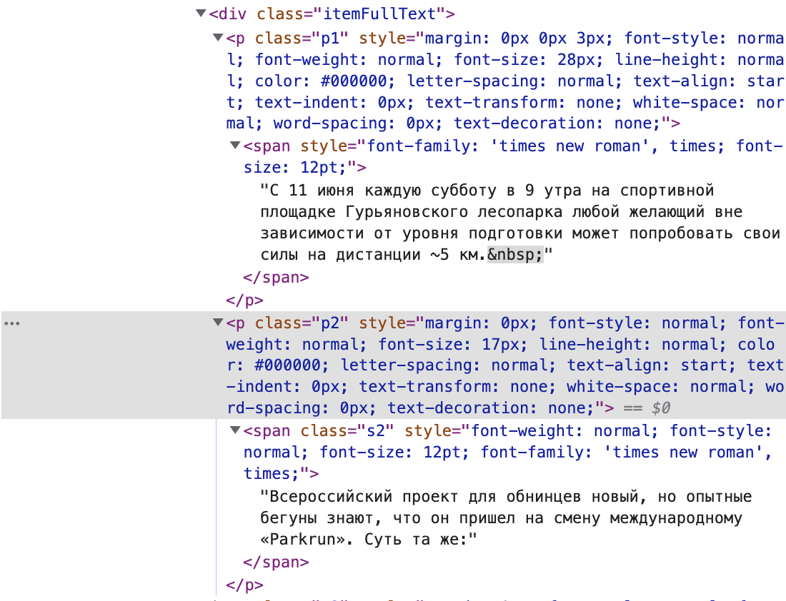
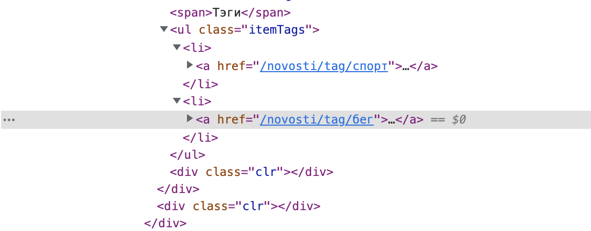
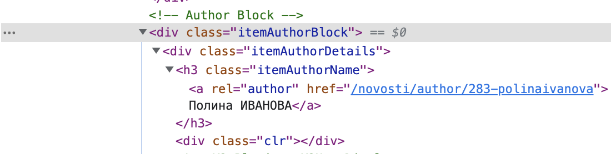

7 Как собрать корпус самостоятельно. Краулеры.

7.1 Что такое краулеры
Краулеры - программы, которые собирают информацию со страниц сайтов. На многих сайтах стоят ограничения на использование таких программ, так как это, как минимум, может уронить сервер. В связи с этим, использовать краулеры надо осторожно, чтобы не заблокировали по IP и чтобы вы не навредили серверу.
7.2 Википедия
Для скачивания Википедии есть специальная библиотека. Одна из фишек Википедии: возможность скачать данные для большого количества языков. Например, если вам понадобился ломбардский язык, его можно выкачать из Википедии. Импортируем библиотеку
import wikipediaПишем функцию для выкачивания определенного языка
def get_texts_for_lang(lang, n=10):
wiki_content = [] ## сюда будем записывать данные со страницы
wikipedia.set_lang(lang) ## здесь выбираем язык
pages = wikipedia.random(n) ## выбираем рандомную статью
for page_name in pages:
try:
page = wikipedia.page(page_name)
wiki_content.append("%s\n%s" % (page.title, page.content.replace('=', ''), page.categories))
except wikipedia.exceptions.WikipediaException: ## если не выкачивается, пропускаем
print("Skip %s" % page_name)
return wiki_contentСкачаем данные для ломбардского языка.
lang = 'lmo' ## можно заменить на любой другой нужный вам язык, статьи на котором есть в Вики
wiki_texts = get_texts_for_lang(lang, 1000)
print(lang, len(wiki_texts))7.3 Парсинг газет
А если нам нужна не Википедия, а какой-то конкретный сайт? Необходимо воспользоваться библиотекой BeautifulSoup и urllib.request.
Импортируем библиотеки
from bs4 import BeautifulSoup
from urllib.request import urlopenВозьмем какую-нибудь газету и выкачаем оттуда новости
url = 'http://ngregion.ru/novosti'
html_doc = urlopen(url).read()
soup = BeautifulSoup(html_doc, 'html.parser')Теперь у нас есть soup, в котором лежит скаченная страница url. Что с этим делать? Нам необходимо вытащить со страницы текст новости и метаданные. Для того, чтобы понять, как их достать, необходимо посмотреть на устройство страницы html. Для этого неободимо кликнуть на правую кнопку мыши и перейти на “Просмотр кода страницы” (для Google Chrome). Базовые примеры можно посмотреть здесь.
Посмотрим на наш сайт.
Заголовок текста находится внутри класса заголовка. 
Сам текст расположен ниже и устроен чуть сложнее. Весь он лежит под тегом div class=“itemFullText,” но разбит на кусочки. 
Можем еще дополнительно достать теги для статьи. 
Может быть нам понадобится и автор. 
Пример выкачки статьи. Последовательно выкачиваем название, текст, автора и теги.
from bs4 import BeautifulSoup
from urllib.request import urlopen
#ищем название статьи
title = soup.find("h2", attrs={"class": "itemTitle"}).get_text()
title = title.replace('\n', '') #убираем лишние символы
title = title.replace('\t', '')
#достаем текст
text = soup.find("div", attrs={"class": "itemFullText"}).get_text()
text = text.replace('\n', '')
text = text.replace('\xa0', '')
#ищем автора
author = soup.find("h3", attrs={"class": "itemAuthorName"}).get_text()
author = author.replace('\n', '')
#ищем теги
tags = soup.find("ul", attrs={"class": "itemTags"}).get_text()
tags = tags.split('\n')[1:-1] #делаем список теговПопробуйте теперь самостоятельно написать строку поиска названия и текста для газеты. Например для поиска автора выше мы использовали soup.find(“h3,” attrs={“class”: “itemAuthorName”}).get_text(). В таком же виде укажите ответы для данного издания.
Введите функцию для поиска названия статьи
Введите функцию для поиска текста статьи